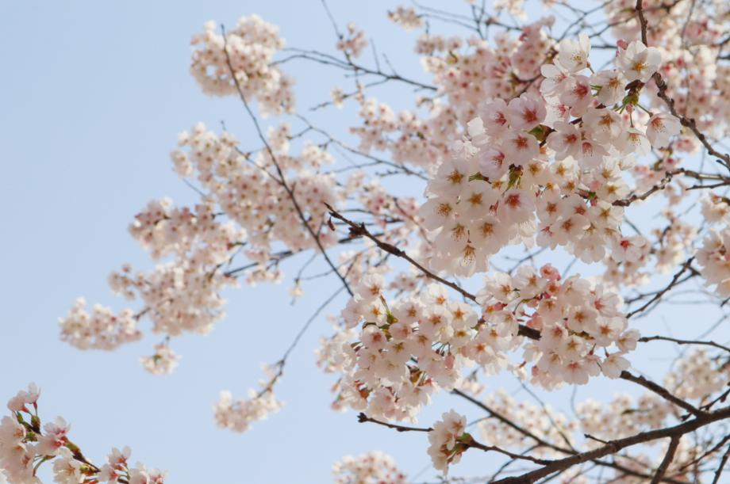
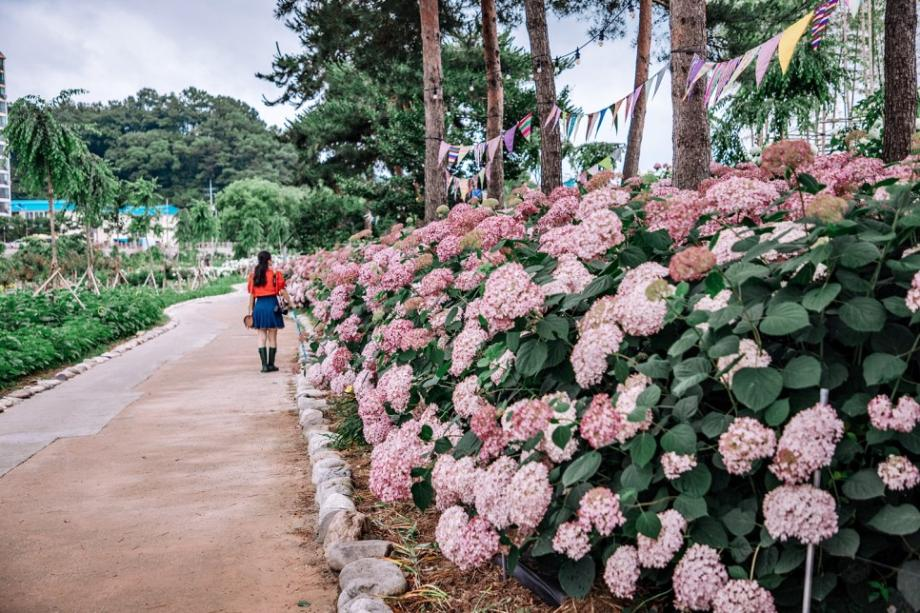
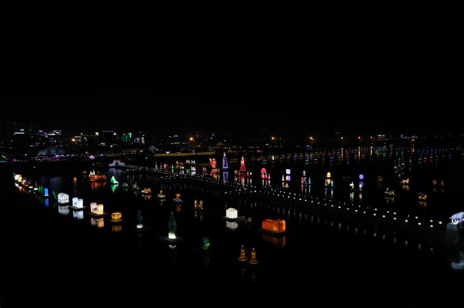
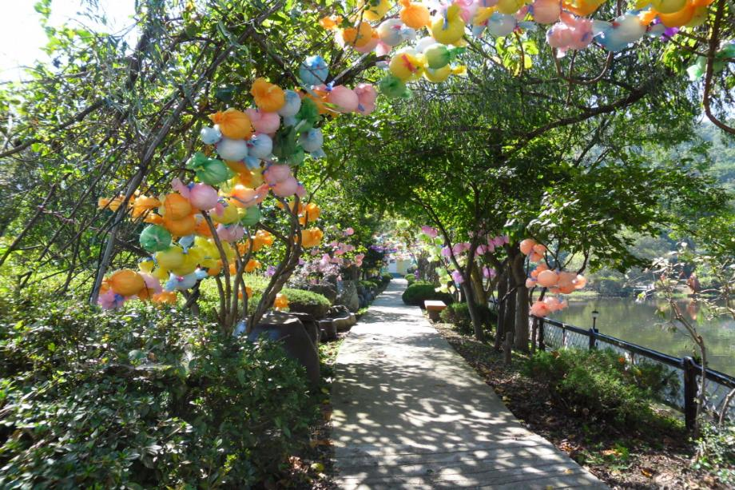
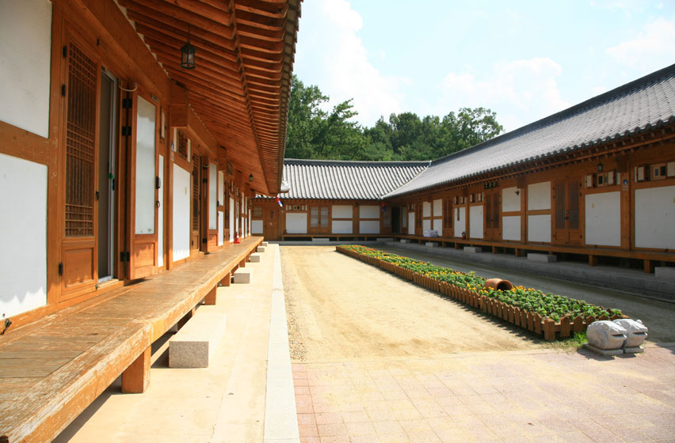
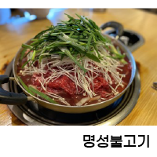
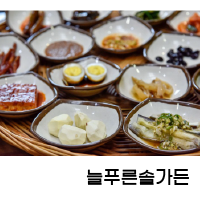
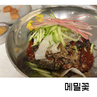
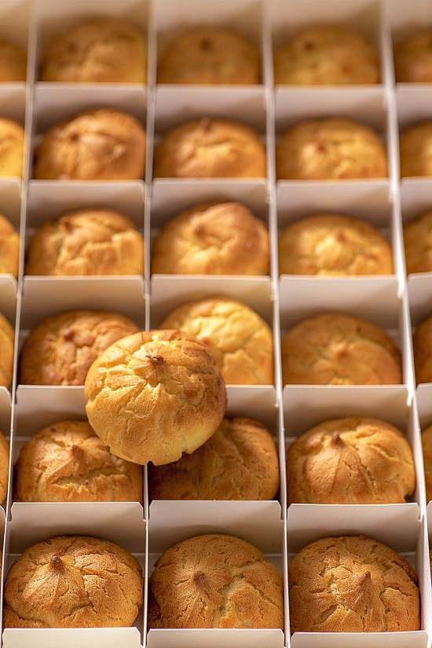

 공주의 봄계룡산 벚꽃축제4. 1 ~ 4. 30  공주의 여름유구색동수국정원꽃 축제6. 17 ~ 6. 19  공주의 가을백제문화제10. 1 ~ 10. 10  공주의 겨울공주 국제미술제9. 1 ~ 11. 30
 숙박전통과 현대가 공존하는 어울림의 미학이 있는 공주한옥마을 공주한옥마을은 한국 전통난방으로 구들장 체험이 가능한 시설로 설계되었고, 친환경 건축양식인 소나무·삼나무 집성재 사용, 도시·현대인들이 머무는데 편리하도록 설계된 신 한옥으로, 가족여행, 수학여행, 기관·단체의 워크숍 등 관광과 휴양으로 아주 훌륭한 곳입니다. 그리고 공주한옥마을에 오시면 백제문화를 체험으로 배울 수 있는 전통문화체험이 기다리고 있습니다. 한옥마을 곳곳에 휴식공간과 한옥마을 둘레길을 걸어도 좋고, 무인자전거를 빌려타고 작은도시·옛도시(古都) 문화유적을 만나셔도 좋습니다. 또한 주말에 진행되는 전통혼례의 구경도 빼놓을 수 없는 매력입니다.    맛집  쇼핑탄수화물·단백질·기타지방·칼슘·비타민 등이 풍부하여 발육과 성장에 좋은 공주 알밤빵 특히 비타민 C가 많이 들어 있어 피부미용과 피로회복·감기예방 등에 효능이 있습니다. 당분에는 위장 기능을 강화하는 효소가 들어 있으며, 성인병 예방과 신장 보호에도 효과가 있습니다. <판매점> 공주 율찬 : 공주시 신관로 74 (공주종합버스터미널 내), 041-853-1001 공주 밤빵 정안알밤휴게소 하행점 : 공주시 정안면 논산천안고속도로 57 공주알밤빵 이인휴게소점 : 공주시 이인면 논산천안고속도로 32